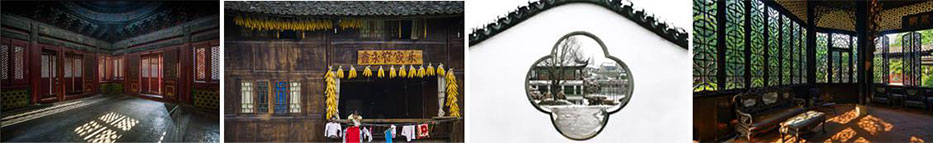
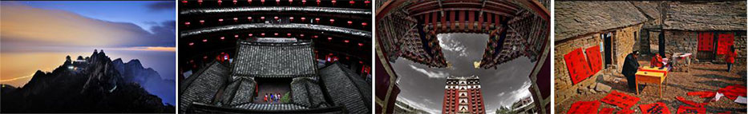
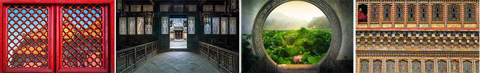

“雪花纯生匠心营造”中国古建筑摄影大赛•户牖 由华润雪花啤酒（中国）有限公司主办，清华大学建筑学院协办，是全国规模最大的中国古建筑类摄影赛事。2016年大赛将设立 主赛区 与 大学生赛区 ，每个赛区中分别设立 【古建•传承奖】 和 【匠心营造•户牖奖】 ，共计80个奖项,且本次大赛开通手机端官方征稿平台。同时，获奖选手代表将有机会参加于9月份举行的 【雪花纯生匠心营造•户牖】 年度大型主题外拍活动，届时将从该外拍活动中产生出十名 【雪花纯生匠心营造 年度摄影师】 。
大赛征稿： 2016年7月7日-2016年8月1日
获奖作品公布： 2016年8月底（公布于 雪花纯生匠心营造官网 www.archfans.com ）
【雪花纯生匠心营造•户牖】年度大型主题外拍活动： 2016年9月上旬
颁奖典礼: 2016年9月底
*预计时间是活动日程计划时间，具体时间以我方最终公布的时间为准*
主赛区
参赛投稿人员年龄应年满18周岁，投稿作品须符合大赛主题要求。
奖项设置：
【古建•传承奖】
中国古建筑艺术是世界上延续历史最长、分布地域最广、风格鲜明的独特建筑艺术体系。古建传承奖旨在将现存的宫殿、陵墓、坛庙、宗教、园林、乡土等类型建筑用 影像的方式更好的保存记录下来。【古建•传承奖】题材不局限于建筑本身，更强调建筑与环境、建筑与人文之间的关系（例如建筑四周的环境、建筑内部的家具陈列、 使用建筑的人群及牲畜、在建筑环境中举行的民俗活动等等）。
一等奖
5名 每名奖金￥10000元
二等奖
10名 每名奖金￥6000元
三等奖
15名 每名奖金￥3000元
示例图片：
【匠心营造•户牖奖】
户牖（yǒu），指古建筑中单体建筑的房屋门窗。其中，户为门，牖为窗。户牖按照建筑类别的不同，可分为宫殿户牖、园林户牖、庙堂户牖、民居户牖四类。不同类别的户牖，也随着地域变化显现出丰富多彩的艺术美感。【匠心营造•户牖（yǒu）奖】希望摄影师通过古建筑的细节，去诠释中国古建筑的匠心营造。
一等奖
3名 每名奖金￥10000元
二等奖
5名 每名奖金￥6000元
三等奖
10名 每名奖金￥3000元
示例图片：

大学生赛区
只接受在校大学生的投稿。大学生赛区旨在吸引、鼓励当代大学生对中国古建筑文化的了解与关注，并能够将雪花纯生“匠心营造”的品牌内涵普及传承。
奖项设置：
【古建•传承奖】
中国古建筑艺术是世界上延续历史最长、分布地域最广、风格鲜明的独特建筑艺术体系。古建传承奖旨在将现存的宫殿、陵墓、坛庙、宗教、园林、乡土等类型建筑用 影像的方式更好的保存记录下来。【古建•传承奖】题材不局限于建筑本身，更强调建筑与环境、建筑与人文之间的关系（例如建筑四周的环境、建筑内部的家具陈列、 使用建筑的人群及牲畜、在建筑环境中举行的民俗活动等等）。
一等奖
3名 大疆精灵3Professional航拍器
二等奖
5名 gopro Hero4 Silver运动摄像机
三等奖
10名 富图宝 C-5C Orange 碳纤三脚架
示例图片：

【匠心营造•户牖奖】
户牖（yǒu），指古建筑中单体建筑的房屋门窗。其中，户为门，牖为窗。户牖按照建筑类别的不同，可分为宫殿户牖、园林户牖、庙堂户牖、民居户牖四类。不同类 别的户牖，也随着地域变化显现出丰富多彩的艺术美感。 【匠心营造•户牖（yǒu）奖】 希望摄影师通过古建筑的细节，去诠释中国古建筑的匠心营造。
一等奖
2名 大疆精灵3Professional航拍器
二等奖
4名 gopro Hero4 Silver运动摄像机
三等奖
8名 富图宝 C-5C Orange 碳纤三脚架
示例图片：

备注
- 根据《个人所得税法、个人所得税法实施条例》的规定，获奖者因获奖发生的20%个人所得税由大赛组委会代为办理，税金从奖金中扣除，主办方会将完税证明通过快递形式邮寄给获奖者。
- 获奖作者应得奖金或奖品将于2016年12月31日前完成发放。
- 获奖者需完整填写《获奖信息确认函》，否则将视为放弃获奖资格。
POCO主赛区
参赛投稿人员年龄应年满18周岁，投稿作品须符合大赛主题要求。
奖项设置：
【古建•传承奖】
- 一等奖 1名 每名奖金￥5000元
- 二等奖 1名 每名奖金￥2500元
- 三等奖 2名每名奖金￥1500元
【匠心营造•户牖奖】
- 一等奖 1名 每名奖金￥5000元
- 二等奖 1名 每名奖金￥2500元
- 三等奖 2名每名奖金￥1500元
POCO大学生赛区
只接受 在校大学生 的投稿。 大学生赛区 旨在吸引、鼓励当代大学生对中国古建筑文化的了解与关注，并能够将雪花纯生“匠心营造”的品牌内涵普及传承。
【古建•传承奖】
一等奖
1名 GoPro HERO 运动摄像机
二等奖
1名 小蚁（yi）运动相机 基础版
三等奖
2名 360 酷跑 耳挂式专业运动蓝牙耳机
【匠心营造•户牖奖】
一等奖
1名 GoPro HERO 运动摄像机
二等奖
1名 小蚁（yi）运动相机 基础版
三等奖
2名 360 酷跑 耳挂式专业运动蓝牙耳机
备注
1、根据《个人所得税法、个人所得税法实施条例》的规定，获奖者因获奖发生的
个人所得税由POCO摄影网代为办理，税金从奖金中扣除，POCO摄影网将完税证明通过快递形式邮寄给获奖者。
2、获奖作者应得奖金或奖品将于2016年9月30日前完成发放。
3、获奖者需完整填写《获奖信息确认函》，否则将视为放弃获奖资格。
【雪花纯生匠心营造•户牖】年度大型主题外拍活动将于2016年9月上旬正式启动。届时，大赛主办方会邀请部分获奖作者，同古建筑专家、摄影专家、全国新闻媒体一道进行为期十余天的古建筑寻访及拍摄活动。独特的古建筑行程，专业的古建导师带队，丰富的古建筑知识讲座，将带领大家用心灵感受古建筑的细节之美，感受匠人的专注精神和精湛技艺，用镜头展现古建筑匠心营造的独特魅力。同时，参加活动的选手中将评选产生出十名【雪花纯生匠心营造年度摄影师】。
活动时间：2016年9月上旬
| 参加人员： | 大赛各赛区获奖作者代表 |
| 大赛评委专家 | |
| 清华大学建筑学院古建筑专家 | |
| 大赛合作专业机构及全国媒体 |
官网投稿：
① 参赛者登录
雪花纯生匠心营造官网
www.archfans.com
，填写个人真实信息并注册个人ID（已注册用户可使用原有ID），并在网站上传参赛作品。
② 参赛者亦可使用已有的QQ账号、新浪微博账号、网易邮箱及搜狐账号直接登录上传作品。
分赛区投稿： POCO摄影网填写个人真实信息、参赛报名表并注册个人ID（已注册用户可使用原有ID），上传作品。
邮寄投稿：
参赛者将参赛作品背面附填写完整的
参赛报名表
，并邮寄至大赛组委会。
参赛作品邮寄地址：中国 北京 朝阳区东四环中路78号 2号楼 B座703室
收件人：“雪花纯生匠心营造”中国古建筑摄影大赛•户牖组委会
咨询专线：010-59626807 （周一至周五 10:00-17:00）
答疑邮箱：
archfans@crb.cn（此邮箱仅作答疑用，不接受任何参赛作品投稿）
本次大赛不收取任何参赛费，不退稿。
主赛区
- 大赛入围名单将于8月底于“雪花纯生匠心营 造官网”www.archfans.com公布，入围作者按组委会电话及邮件、短信通知信息提交入围作品原文件（及后期处理照片）方可获得继续参评资格，入围作品原稿征集最终截止时间为2016年8月14日上午12:00分，逾期视为弃权。
- 最终评选结束后，主办方将在雪花纯生匠心营造官网 www.archfans.com公布获奖名单。届时获奖作品将在官网公示7个工作日，若作品存在侵权及非本人作品等情况，请异议人联系大赛组委会指定邮箱：archfans@crb.cn（此邮箱不接受任何参赛作品投稿）并提供侵权证明：本人身份证明文件（身份证、或者护照等）、拍摄作品原稿及拍摄说明等。
- 大赛组委会将通过参赛者在雪花纯生匠心营造官网 www.archfans.com以及其他分赛区注册时、以及在参赛报名表中填写的联系方式通知获奖信息。自通知日起5个工作日内未取得获奖作者完整填写的《获奖信息确认函》、或作者未提交作品原稿将视为弃权，主办方将不作任何形式赔偿。
- 大学生赛区获奖作者应在主办方通知时间内，提供盖有大学公章的在校证明。
- 获奖代表将由主办方邀请至北京参加颁奖典礼（往返的交通及住宿事宜由华润雪花啤酒（中国）有限公司统一安排并承担相应费用）。
POCO主赛区
- 获奖名单将于9月中旬在http://www1.poco.cn/topic/snowbeer_2016/ 公布。届时获奖作品将公示7个工作日，若作品存在侵权及非本人作品等情况，请异议人联系POCO摄影网客服，QQ：1044859368，并提供侵权证明：本人身份证明文件（身份证、或者护照等）、拍摄作品原稿及拍摄说明等。
- POCO摄影网将通过参赛者在雪花纯生匠心营造POCO分赛区上传注册时，填写的联系方式（邮箱、电话）通知获奖信息。自通知日起5个工作日内未取得获奖作者完整填写的《获奖信息确认函》、或作者未提交作品原稿将视为弃权，POCO摄影网将不作任何形式赔偿。
- 大学生赛区获奖作者应在POCO摄影网通知时间内，提供盖有大学公章的在校证明。
-
参赛作品须为参赛者本人独立完成的原创作品，并且不存在以下情形：
a.已经在其他任何形式比赛中有获奖项；
b.在本摄影大赛期间同时是其他任何形式的摄影比赛的参赛作品；
c.已经许可他人使用，或者是著作权许可使用商谈中的标的图片；
d.参赛作品著作权已经转让给他人或是正在商谈中著作权转让的标的图片；
e.联合创作的作品；
f.参赛作品不得抄袭、拷贝、仿冒他人作品；
g.他人委托创作作品和职务作品。评审后如参赛作品被检举不符合本赛制要求的，经主办方查证属实者，主办方有权取消该作品的获奖资格，取消之奖项不再替补。如已领取奖项者，主办方有权追回原奖项。 -
主赛区投稿作品必须保留数码照片拍摄信息（EXIF），上传格式为jpg，保证能够提供不少于300dpi原稿，否则视为无效作品。
-
传统照片参赛作品尺寸不小于10英寸，必须保证能够提供作品原始底片，否则视为无效作品。
-
参赛者不得为参赛作品进行人为后期处理画框，不得在作品上出现与任何本次大赛无关的商业信息（如促销信息、其他品牌logo、个人网页链接等），否则视为无效作品。
-
本次大赛不接受多幅照片拼贴、剪辑等过度PS的作品。
-
每个ID每天单张作品的投稿数量不得超过8张（组图作品即为1张）；每个ID每天组图作品不得超过8组（其中每组作品应包含3到8张照片）。
-
参赛者须拥有作品完整的著作权，并获得参赛照片中所包含人物肖像权的使用许可以及其它必要的许可，同时须保证上传的照片不侵犯任何第三人的著作权、肖像权、名誉权、隐私权、商标权、商号权及其他合法权益；作品涉及的肖像权、名誉权、著作权等法律责任均由参赛者本人承担，主办方不承担由此引起的一切法律后果。
-
任何人发现本次大赛参赛照片有侵权嫌疑，请及时与大赛组委会联系。主办方任何时候一经接到包括有关照片肖像权、著作权等相关投诉的，或者发现投稿作品违反第7条时，将立即删除相关照片并把相关投诉转送至上传人（即参赛者），由参赛者自行解决相关投诉并承担费用。
-
因参赛照片侵犯任何第三方的合法权益等情形使主办方遭受损失的，主办方有权要求上传照片者（即参赛者）承担主办方全部损害。
-
参赛者同意主办方在与本赛事的相关活动中公布和免费使用参赛作品、作者姓名和其他必要信息。使用形式包括但不限于大赛广告片、摄影作品展、作品集、网络宣传、促销礼品等各种商业性利用。华润雪花啤酒（中国）有限公司在使用过程中有权根据实际使用情况决定是否标注作者姓名、对作品进行必要的修改等。
-
大赛征集作品如均不能达到某类奖项评审标准，大赛组委会有权保持此项奖项空缺。
-
所有参赛者上传的照片和文字不得违反中华人民共和国法律法规、违背公共秩序和善良风俗以及道德标准之内容，不得上传具有色情、暴力等不健康内容的照片和文字，一经发现，主办方将不予上传并有权提交相关部门处理。
-
主办方对此次摄影大赛参赛者提交的个人信息将仅在处理获奖作品使用相关事宜的必要范围内使用。
-
参赛者填报信息和提交参赛作品之行为，应视为该参赛者充分理解本赛制之内容，并承诺接受本赛制约束。
大赛主办方：华润雪花啤酒（中国）有限公司
大赛协办方：清华大学建筑学院
本赛制未尽事宜将由主办方依照诚信原则进行补充并在
雪花纯生匠心营造官网
www.archfans.com
公布。